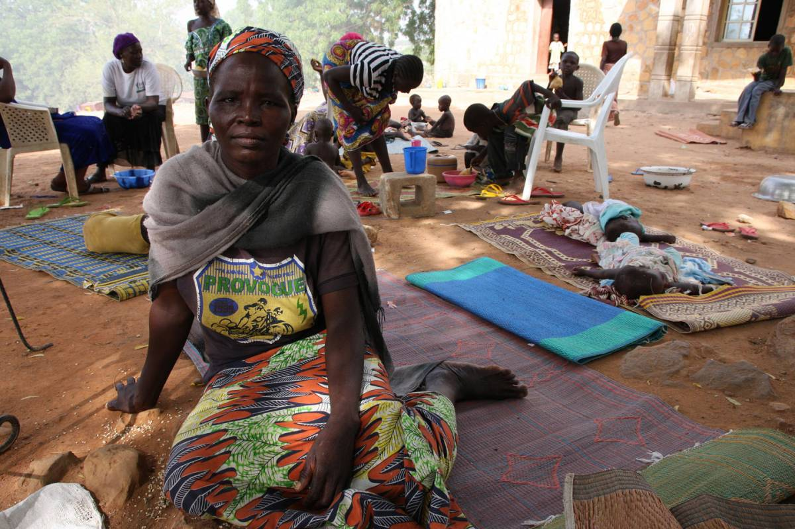

La Nigeria del Nord è caratterizzata da un clima semi-arido che, con meno di 600 millimetri di precipitazioni all’anno, diventa la zona più secca di tutta la fascia del Sahel africano, con conseguenze devastanti per la biodiversità del terreno. L’agricoltura si concentra nella parte centrale del Paese, e rappresenta il 42% del Prodotto interno lordo nazionale. L’80% dei nigeriani nel Nord vive di pastorizia e produzione agricola, ma la regione rimane la meno efficiente da un punto di vista sia economico che infrastrutturale. L’alto tasso di povertà da un lato, e gli attacchi terroristici di Boko Haram dall’altro, hanno contribuito alla distruzione delle aree agricole del Paese, con un conseguente accentuarsi dell’insicurezza alimentare e una diminuzione della produzione di generi alimentari, per cui i contadini si sono visti costretti ad abbandonare le proprie case. E chi è fuggito non ha intenzione di tornare, per paura del conflitto.
La mancanza di dati ufficiali sulle violenze sessuali e sui numeri delle combattenti non giova certo alla strategia adottata dal Governo nigeriano per far fronte alla crisi. Se da un lato le donne schierate in favore della pace vedono riconosciuto il proprio impegno, a quelle che sfuggono dalle mani di Boko Haram non viene offerto nessun tipo di appoggio, e le sfollate nei campi rifugiati non hanno alcuna possibilità di sostentamento. I volti e le voci delle vittime che fanno ritorno alle proprie comunità di appartenenza si perdono nel pregiudizio di una società che vede in loro unicamente lo stigma indelebile del gruppo terroristico. Questa situazione crea ulteriore vulnerabilità e potrebbe degenerare in un esacerbarsi del malcontento, e quindi in altra violenza.Sia il Governo nigeriano che la comunità internazionale devono iniziare a guardare alle donne come artefici del cambiamento, come forza di mobilitazione sociale in grado di mitigare l’impatto della violenza e del degrado ambientale. La situazione delle sfollate va urgentemente analizzata e gestita. Infine, le donne vanno coinvolte nelle fasi strategiche di progettazione e attuazione delle misure di intervento.
